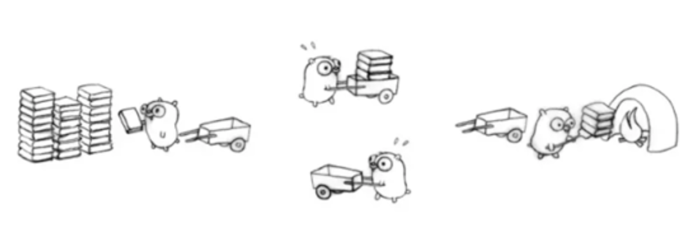
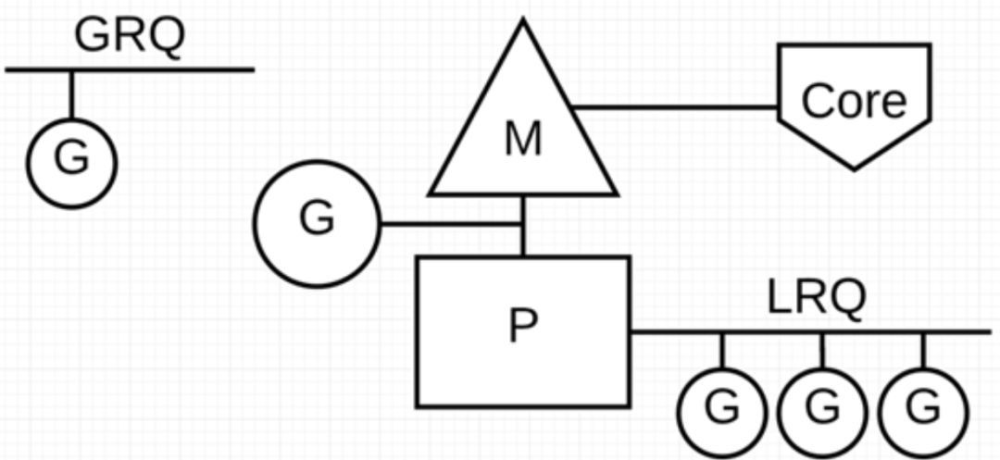
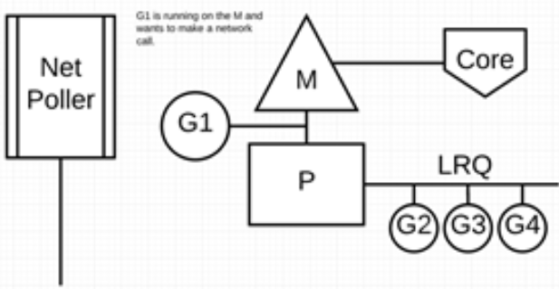
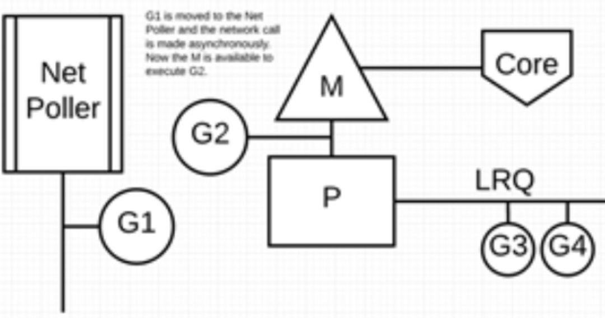
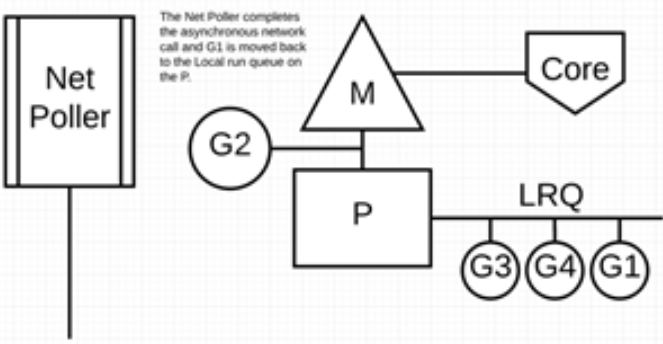
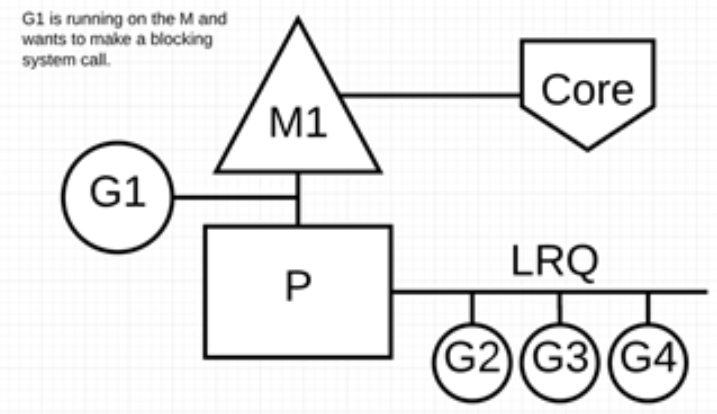
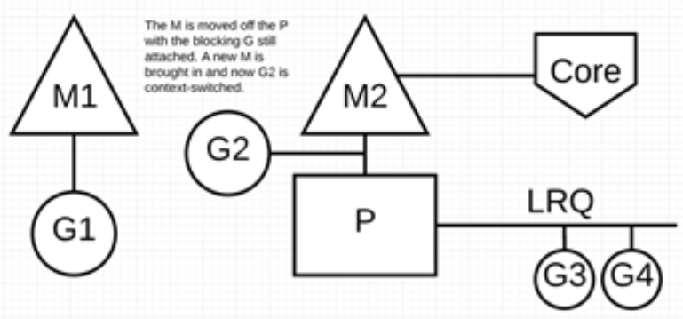
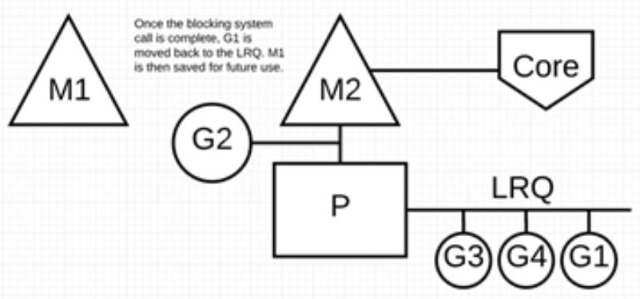

作者：joellwang，腾讯 CSIG 后台开发工程师
本文主要介绍了 Go 程序为了实现极高的并发性能，其内部调度器的实现架构（G-P-M 模型），以及为了最大限度利用计算资源，Go 调度器是如何处理线程阻塞的场景。
怎么让我们的系统更快
随着信息技术的迅速发展，单台服务器处理能力越来越强，迫使编程模式由从前的串行模式升级到并发模型。
并发模型包含 IO 多路复用、多进程以及多线程，这几种模型都各有优劣，现代复杂的高并发架构大多是几种模型协同使用，不同场景应用不同模型，扬长避短，发挥服务器的最大性能。
而多线程，因为其轻量和易用，成为并发编程中使用频率最高的并发模型，包括后衍生的协程等其他子产品，也都基于它。
并发 ≠ 并行
并发 (concurrency) 和 并行 ( parallelism) 是不同的。
在单个 CPU 核上，线程通过时间片或者让出控制权来实现任务切换，达到 “同时” 运行多个任务的目的，这就是所谓的并发。但实际上任何时刻都只有一个任务被执行，其他任务通过某种算法来排队。
多核 CPU 可以让同一进程内的 “多个线程” 做到真正意义上的同时运行，这才是并行。
进程、线程、协程
进程：进程是系统进行资源分配的基本单位，有独立的内存空间。
线程：线程是 CPU 调度和分派的基本单位，线程依附于进程存在，每个线程会共享父进程的资源。
协程：协程是一种用户态的轻量级线程，协程的调度完全由用户控制，协程间切换只需要保存任务的上下文，没有内核的开销。
线程上下文切换
由于中断处理，多任务处理，用户态切换等原因会导致 CPU 从一个线程切换到另一个线程，切换过程需要保存当前线程的状态并恢复另一个线程的状态。
上下文切换的代价是高昂的，因为在核心上交换线程会花费很多时间。上下文切换的延迟取决于不同的因素，大概在在 50 到 100 纳秒之间。考虑到硬件平均在每个核心上每纳秒执行 12 条指令，那么一次上下文切换可能会花费 600 到 1200 条指令的延迟时间。实际上，上下文切换占用了大量程序执行指令的时间。
如果存在跨核上下文切换（Cross-Core Context Switch），可能会导致 CPU 缓存失效（CPU 从缓存访问数据的成本大约 3 到 40 个时钟周期，从主存访问数据的成本大约 100 到 300 个时钟周期），这种场景的切换成本会更加昂贵。
Golang 为并发而生
Golang 从 2009 年正式发布以来，依靠其极高运行速度和高效的开发效率，迅速占据市场份额。Golang 从语言级别支持并发，通过轻量级协程 Goroutine 来实现程序并发运行。
Goroutine 非常轻量，主要体现在以下两个方面：
上下文切换代价小： Goroutine 上下文切换只涉及到三个寄存器（PC / SP / DX）的值修改；而对比线程的上下文切换则需要涉及模式切换（从用户态切换到内核态）、以及 16 个寄存器、PC、SP…等寄存器的刷新；
内存占用少：线程栈空间通常是 2M，Goroutine 栈空间最小 2K；
Golang 程序中可以轻松支持10w 级别的 Goroutine 运行，而线程数量达到 1k 时，内存占用就已经达到 2G。
Go 调度器实现机制：
Go 程序通过调度器来调度Goroutine 在内核线程上执行，但是 Goroutine 并不直接绑定 OS 线程 M - Machine运行，而是由 Goroutine Scheduler 中的 P - Processor （逻辑处理器）来作获取内核线程资源的『中介』。
Go 调度器模型我们通常叫做G-P-M 模型，他包括 4 个重要结构，分别是G、P、M、Sched：
G:Goroutine，每个 Goroutine 对应一个 G 结构体，G 存储 Goroutine 的运行堆栈、状态以及任务函数，可重用。
G 并非执行体，每个 G 需要绑定到 P 才能被调度执行。
P: Processor，表示逻辑处理器，对 G 来说，P 相当于 CPU 核，G 只有绑定到 P 才能被调度。对 M 来说，P 提供了相关的执行环境(Context)，如内存分配状态(mcache)，任务队列(G)等。
P 的数量决定了系统内最大可并行的 G 的数量（前提：物理 CPU 核数 >= P 的数量）。
P 的数量由用户设置的 GoMAXPROCS 决定，但是不论 GoMAXPROCS 设置为多大，P 的数量最大为 256。
M: Machine，OS 内核线程抽象，代表着真正执行计算的资源，在绑定有效的 P 后，进入 schedule 循环；而 schedule 循环的机制大致是从 Global 队列、P 的 Local 队列以及 wait 队列中获取G。
M 的数量是不定的，由 Go Runtime 调整，为了防止创建过多 OS 线程导致系统调度不过来，目前默认最大限制为 10000 个。
M 并不保留 G 状态，这是 G 可以跨 M 调度的基础。
Sched：Go 调度器，它维护有存储 M 和 G 的队列以及调度器的一些状态信息等。
调度器循环的机制大致是从各种队列、P 的本地队列中获取 G，切换到 G 的执行栈上并执行 G 的函数，调用 Goexit 做清理工作并回到 M，如此反复。
理解 M、P、G 三者的关系，可以通过经典的地鼠推车搬砖的模型来说明其三者关系：

地鼠(Gopher)的工作任务是：工地上有若干砖头，地鼠借助小车把砖头运送到火种上去烧制。M 就可以看作图中的地鼠，P 就是小车，G 就是小车里装的砖。
弄清楚了它们三者的关系，下面我们就开始重点聊地鼠是如何在搬运砖块的。
Processor（P）：
根据用户设置的 GoMAXPROCS 值来创建一批小车(P)。
Goroutine(G)：
通过 Go 关键字就是用来创建一个 Goroutine，也就相当于制造一块砖(G)，然后将这块砖(G)放入当前这辆小车(P)中。
Machine (M)：
地鼠(M)不能通过外部创建出来，只能砖(G)太多了，地鼠(M)又太少了，实在忙不过来，刚好还有空闲的小车(P)没有使用，那就从别处再借些地鼠(M)过来直到把小车(P)用完为止。
这里有一个地鼠(M)不够用，从别处借地鼠(M)的过程，这个过程就是创建一个内核线程(M)。
需要注意的是：地鼠(M) 如果没有小车(P)是没办法运砖的，小车(P)的数量决定了能够干活的地鼠(M)数量，在 Go 程序里面对应的是活动线程数；
在 Go 程序里我们通过下面的图示来展示 G-P-M 模型：

P 代表可以“并行”运行的逻辑处理器，每个 P 都被分配到一个系统线程 M，G 代表 Go 协程。
Go 调度器中有两个不同的运行队列：全局运行队列(GRQ)和本地运行队列(LRQ)。
每个 P 都有一个 LRQ，用于管理分配给在 P 的上下文中执行的 Goroutines，这些 Goroutine 轮流被和 P 绑定的 M 进行上下文切换。GRQ 适用于尚未分配给 P 的 Goroutines。
从上图可以看出，G 的数量可以远远大于 M 的数量，换句话说，Go 程序可以利用少量的内核级线程来支撑大量 Goroutine 的并发。多个 Goroutine 通过用户级别的上下文切换来共享内核线程 M 的计算资源，但对于操作系统来说并没有线程上下文切换产生的性能损耗。
为了更加充分利用线程的计算资源，Go 调度器采取了以下几种调度策略：
任务窃取（work-stealing）
我们知道，现实情况有的 Goroutine 运行的快，有的慢，那么势必肯定会带来的问题就是，忙的忙死，闲的闲死，Go 肯定不允许摸鱼的 P 存在，势必要充分利用好计算资源。
为了提高 Go 并行处理能力，调高整体处理效率，当每个 P 之间的 G 任务不均衡时，调度器允许从 GRQ，或者其他 P 的 LRQ 中获取 G 执行。
减少阻塞
如果正在执行的 Goroutine 阻塞了线程 M 怎么办？P 上 LRQ 中的 Goroutine 会获取不到调度么？
在 Go 里面阻塞主要分为一下 4 种场景：
场景 1：由于原子、互斥量或通道操作调用导致 Goroutine 阻塞，调度器将把当前阻塞的 Goroutine 切换出去，重新调度 LRQ 上的其他 Goroutine；
场景 2：由于网络请求和 IO 操作导致 Goroutine 阻塞，这种阻塞的情况下，我们的 G 和 M 又会怎么做呢？
Go 程序提供了网络轮询器（NetPoller）来处理网络请求和 IO 操作的问题，其后台通过 kqueue（MacOS），epoll（Linux）或 iocp（Windows）来实现 IO 多路复用。
通过使用 NetPoller 进行网络系统调用，调度器可以防止 Goroutine 在进行这些系统调用时阻塞 M。这可以让 M 执行 P 的 LRQ 中其他的 Goroutines，而不需要创建新的 M。有助于减少操作系统上的调度负载。
下图展示它的工作原理：G1 正在 M 上执行，还有 3 个 Goroutine 在 LRQ 上等待执行。网络轮询器空闲着，什么都没干。

接下来，G1 想要进行网络系统调用，因此它被移动到网络轮询器并且处理异步网络系统调用。然后，M 可以从 LRQ 执行另外的 Goroutine。此时，G2 就被上下文切换到 M 上了。

最后，异步网络系统调用由网络轮询器完成，G1 被移回到 P 的 LRQ 中。一旦 G1 可以在 M 上进行上下文切换，它负责的 Go 相关代码就可以再次执行。这里的最大优势是，执行网络系统调用不需要额外的 M。网络轮询器使用系统线程，它时刻处理一个有效的事件循环。

这种调用方式看起来很复杂，值得庆幸的是，Go 语言将该“复杂性”隐藏在 Runtime 中：Go 开发者无需关注 socket 是否是 non-block 的，也无需亲自注册文件描述符的回调，只需在每个连接对应的 Goroutine 中以“block I/O”的方式对待 socket 处理即可，实现了 goroutine-per-connection 简单的网络编程模式（但是大量的 Goroutine 也会带来额外的问题，比如栈内存增加和调度器负担加重）。
用户层眼中看到的 Goroutine 中的“block socket”，实际上是通过 Go runtime 中的 netpoller 通过 Non-block socket + I/O 多路复用机制“模拟”出来的。Go 中的 net 库正是按照这方式实现的。
场景 3：当调用一些系统方法的时候，如果系统方法调用的时候发生阻塞，这种情况下，网络轮询器（NetPoller）无法使用，而进行系统调用的 Goroutine 将阻塞当前 M。
让我们来看看同步系统调用（如文件 I/O）会导致 M 阻塞的情况：G1 将进行同步系统调用以阻塞 M1。

调度器介入后：识别出 G1 已导致 M1 阻塞，此时，调度器将 M1 与 P 分离，同时也将 G1 带走。然后调度器引入新的 M2 来服务 P。此时，可以从 LRQ 中选择 G2 并在 M2 上进行上下文切换。

阻塞的系统调用完成后：G1 可以移回 LRQ 并再次由 P 执行。如果这种情况再次发生，M1 将被放在旁边以备将来重复使用。

场景 4：如果在 Goroutine 去执行一个 sleep 操作，导致 M 被阻塞了。
Go 程序后台有一个监控线程 sysmon，它监控那些长时间运行的 G 任务然后设置可以强占的标识符，别的 Goroutine 就可以抢先进来执行。
只要下次这个 Goroutine 进行函数调用，那么就会被强占，同时也会保护现场，然后重新放入 P 的本地队列里面等待下次执行。
小结
本文主要从 Go 调度器架构层面上介绍了 G-P-M 模型，通过该模型怎样实现少量内核线程支撑大量 Goroutine 的并发运行。以及通过 NetPoller、sysmon 等帮助 Go 程序减少线程阻塞，充分利用已有的计算资源，从而最大限度提高 Go 程序的运行效率。
参考文档：
https://www.ardanlabs.com/blog/2018/08/scheduling-in-go-part1.html
https://www.ardanlabs.com/blog/2018/08/scheduling-in-go-part2.html
https://www.ardanlabs.com/blog/2018/12/scheduling-in-go-part3.html
https://segmentfault.com/a/1190000016038785
https://segmentfault.com/a/1190000016611742
https://segmentfault.com/a/1190000017333717
https://segmentfault.com/a/1190000015352983
https://segmentfault.com/a/1190000015464889
https://www.cnblogs.com/lxmhhy/p/6041001.html
https://www.cnblogs.com/mokafamily/p/9975980.html
https://studyGolang.com/articles/9211
https://www.zhihu.com/question/20862617
https://codeburst.io/why-Goroutines-are-not-lightweight-threads-7c460c1f155f
https://blog.csdn.net/tiandyoin/article/details/76556702
https://www.jianshu.com/p/cc3c0fefee43
https://www.jianshu.com/p/a315224886d2
本文分享自微信公众号 - 腾讯技术工程（Tencent_TEG），作者：joellwang
原文出处及转载信息见文内详细说明，如有侵权，请联系 yunjia_community@tencent.com 删除。
原始发表时间：2020-02-26
本文参与腾讯云自媒体分享计划，欢迎正在阅读的你也加入，一起分享。